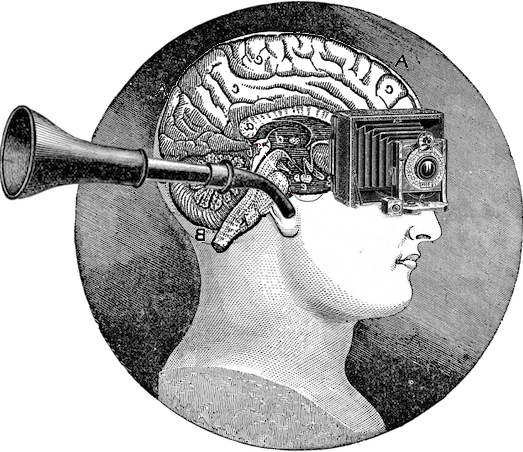

Christian Marques • 2016
Hi. I am a full-time software engineer, amateur musician, aspiring poet and a fervorous dreamer, currently focusing on full-stack web development, WebGL / computer graphics and virtual reality solutions. During my professional career I have contributed to the scientific community, developed a video-game, worked for multinational corporations, created an indie-folk band, volunteered for an NGO after having travelled by land between Greece and Nepal, written a poetry book and co-founded a tech start-up.



“How often have I lain beneath rain
on a strange roof, thinking
of home.”
― William Faulkner
“The difficulty lies not so much in
developing new ideas, as in
escaping from old ones.”
― John Maynard Keynes
“Life without music, would be a mistake.”
― Friedrich Nietzche
“However vast the darkness, we
must supply our own light.”
― Stanley Kubrick
“The art of art, the glory of expression and
the sunshine of the light of letters,
is simplicity.”
― Walt Whitman
“Yesterday I was clever, so I wanted to
change the world. Today I am wise,
so I am changing myself.”
― Jalal ad-Din Muhammad Rumi
“The meeting of two personalities is like the
contact of two chemical substances.
If there is any reaction, both
are transformed.”
― Carl Jung